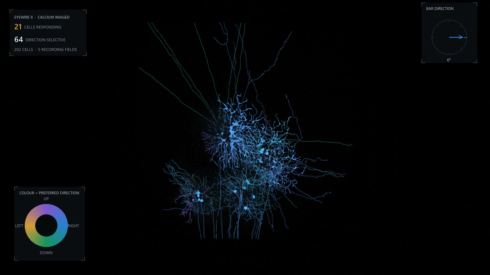

eyewire ii · stroeh mouse retinafunction on structure
Two experiments on the same piece of tissue. Light responses were recorded from these cells while they were alive, then the same cells were cut, imaged in an electron microscope and reconstructed. This plays one back on the other.
A bar of light sweeps across the retina in eight directions in turn. Most cells do not care which way it moves. A minority care a great deal, and they are not a separate structure you could point to in the tissue: they sit interleaved with everything else, and the only thing that distinguishes them is what they do.
Direction selectivity is not made in the brain. It is already finished by the time the signal leaves the eye, and the cell most responsible is the starburst amacrine cell. There are 24 of them in this reconstruction. Their dendrites radiate from the cell body like a firework, and neighbouring cells barely overlap: they divide the sheet between them.
| Element | Where it comes from |
|---|---|
| Cell shape | Electron microscope reconstruction, EyeWire II |
| Hue in the first film | Recorded preferred direction of the cell |
| Brightness in the first film | The cell's own calcium response at that bar direction |
| Which cells count as tuned | Permutation test on the recording, p < 0.05 |
| Depth of the starburst band | Geometry of the reconstruction |
| Colour of each starburst cell | Chosen, and means nothing but identity |
| Speed of everything | Chosen, so it can be watched |
The bar itself is not drawn. Two attempts put a bright slab across the mosaic and both hid the cells they were meant to explain, so the sweep is carried by the cells lighting in sequence instead, each following its own measured tuning curve. The direction being swept is shown on the compass in the corner.
The hard part of this was not rendering. It was deciding which reconstructed cell is which recorded cell, and the obvious routes both failed. Matching on segment identifiers returned nothing, because those identifiers are versioned and get rewritten every time somebody proofreads a merge. Matching on supervoxels did better and still recovered only a small fraction.
What worked was the crudest option: cell body coordinates. A soma is a large object in a fixed place, and both experiments recorded where they are. That match is the reason there is anything on this page.
Reconstruction and cell type labels: the stroeh_mouse_retina dataset on eyewire.ai, served through CAVE. Light responses and direction tuning: the Euler lab's calcium imaging of the same tissue, via eyewire2-functional-analysis. Rendered in Blender with EEVEE Next.